Project 1.
微信插件
主/客态全链路体验设计
Role: Interaction Design / UX Strategy / Prototype / Spec / Experiment
01 / CONTEXT
0%
的新用户次日仍通过微信
再次拉起腾讯新闻App
微信不是一次性的
流量入口
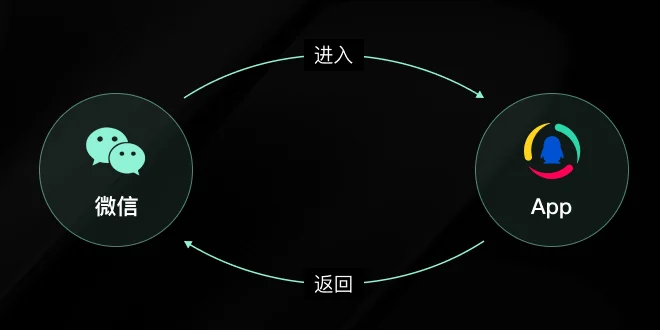
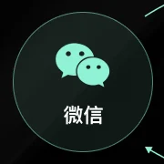
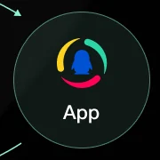
插件不再只是一次性跳转工具，而是用户持续回访的重要入口
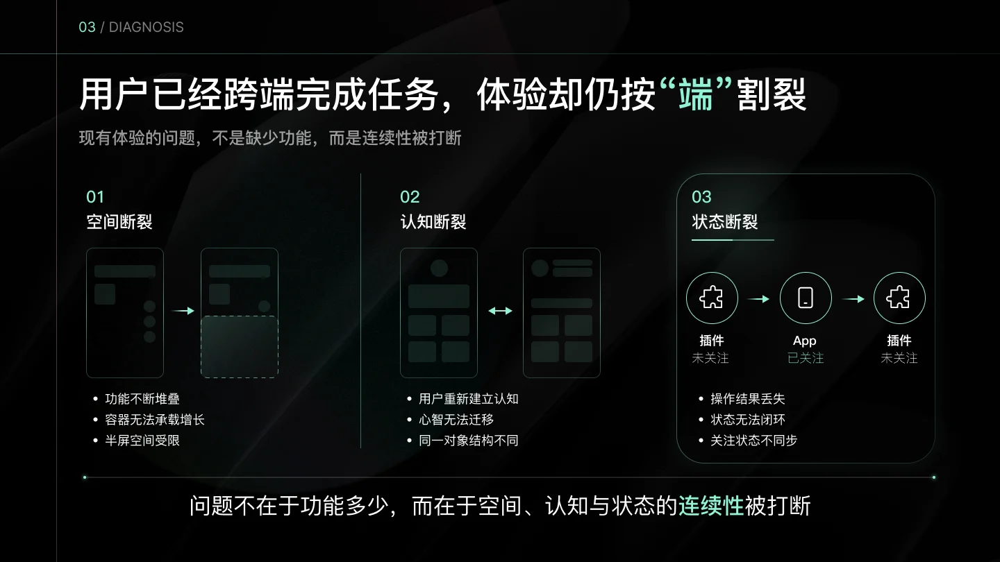
02 / DIAGNOSIS
03 / CURRENT ISSUE
空间断裂：半屏容器限制体验增长
现有工具能力与内容消费共享同一纵向空间，导致遮挡、扩展受限与操作效率下降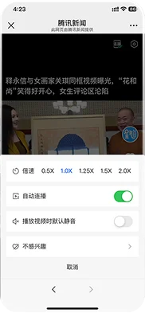
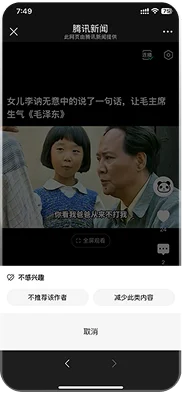
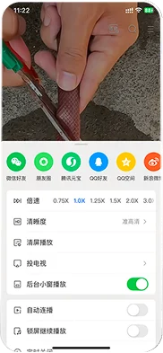
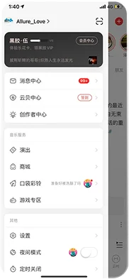
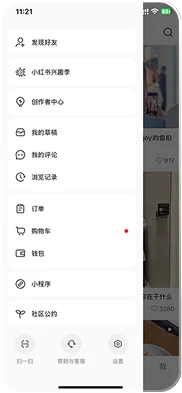
04 / CURRENT ISSUE
主/客态现网问题：身份承载在插件与客户端中不连续
同一身份对象在不同端缺乏一致结构，插件侧也缺少稳定的主态承载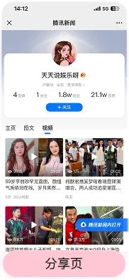
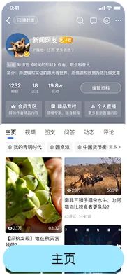
身份结构断裂
05 / KEY DIAGNOSIS
关键链路深挖：关注行为跨端后无法闭环
页面可以跨端跳转，但用户状态必须连续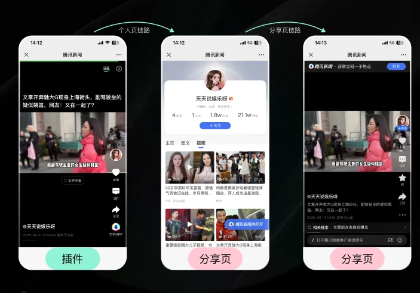
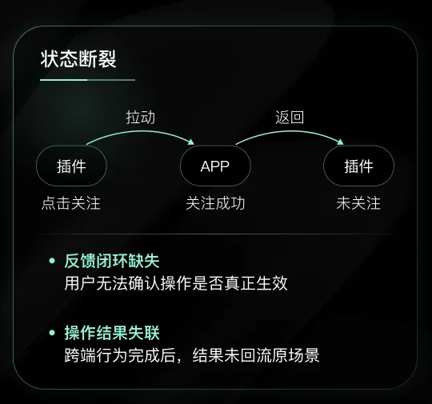
页面可以跨端跳转，但用户状态必须连续
06 / STRATEGY
从「跨端断裂」到「身份与资产连续」
围绕效率、心智、连续性与增长，建立主/客态与沉浸场景的一体化体验方向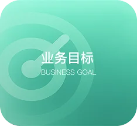
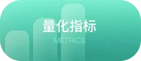
沉浸流→抽屉→主/客态→App
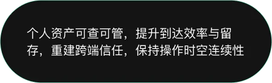
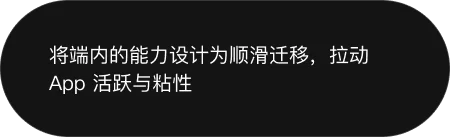
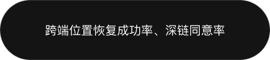
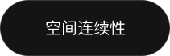
07 / DESIGN 01 DRAWER
从「半屏容器」到「侧边工具空间」
将工具能力从内容纵向空间中释放，让用户在不退出当前视频的情况下完成操作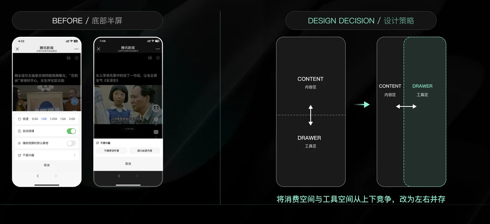
AFTER / 侧边工具空间
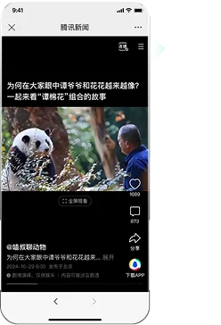
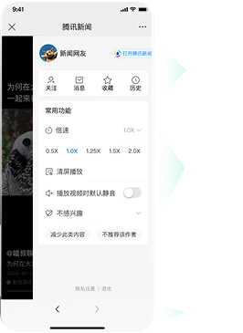
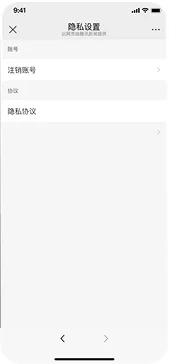
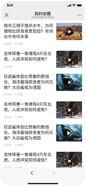
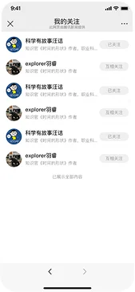
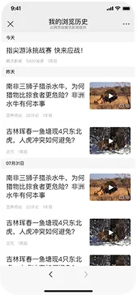
让内容继续，操作并行
08 / DESIGN 02
从「认识别人」到「回到自己」
统一主客态身份承载，让关系沉淀为可管理的个人资产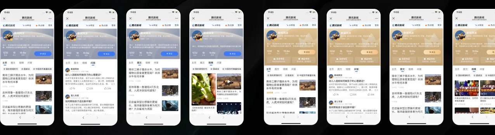
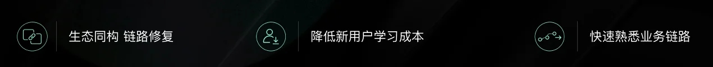
让关系在插件内沉淀，而不是在跨端跳转中流失
CP 信息主页 · 完整成果
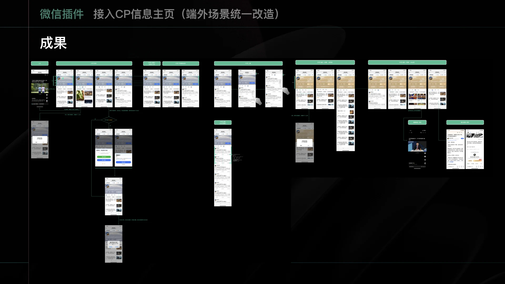
02 / NEXT WORK
BUSINESS REQUIREMENT沉浸流下拉刷新→